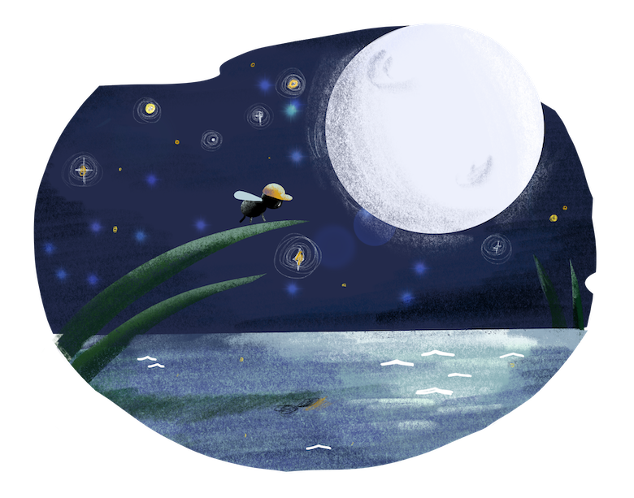

In the town of Hexapoda, the first-ever school called Animalia opens up. As the cock crows and the bird sings, the minor bugs from their home get up excitedly in their beds. The butterfly bus arrives in their designated homes, picking them up to go to Animalia. In the corns field, the first one to ride is Benny, the ant who is thrilled to see what school is. Moving on from the Narra tree is Miles the bee. After a few stops over, the butterfly bus is full of curious minor bugs. A step away, they see the sign of Animalia, and most of them cannot contain their excitement and emotions. For Willy, the fly, is a bit nervous and cannot stop moving inside the bus. So, they go down and form a line, and as soon as the cricket stridulate, the minor bugs run off to the classroom where Mr Caterpillar awaits them. These minor curious bugs look around as if they see a new wide world. Fascinated with what they see, especially Nora, the wasp, she encountered an image that looks like her pinned on the styrofoam wall.
“Okay! Little kiddos! Sit down and find your place behind the little red bottle caps.” Says Mr Caterpillar. He cheerfully welcomes each of the little bugs and lets them know how historical the day is for the town of Hexapoda. Mr Caterpillar wears a hexagon-shaped glass and puts a black rubber around it, for he has trouble with his eyesight. Seeing them is a bit blurry for him, so he calls cricket, his assistant, to wipe his glass. Cricket runs off to him and wipes it thoroughly.
“Welcome to Animalia! We are here to create history in our town. All I want for you to do here in school is to have fun learning.” Addresses Mr Caterpillar.
Then Ms Grasshopper will be the teacher to the first batch of students in Animalia. She hops and says, “ Hello, my dear fellas! I am Ms Grasshopper. I’m pleased to meet and to have fun with you all. I will be your teacher and friend here in Animalia.”
The students make noise according to their distinct sound as a response to Ms Grasshopper.
The cricket makes it sound again, which signals them that it is time to begin their Animalia journey. Ms Grasshopper starts the first class by letting students introduce themselves. As she starts the drill, she says, “I am Ms Grasshopper. I am 4 months old and live in Caelifira with my swarm. Alright! Who wants to go next? With a cheerful high pitched voice.
The students look at each other. Ms Grasshopper encourages them not to be shy. Then Nora, the wasp, buzzes her way off toMs. Grasshopper and starts to introduce herself. As Nora breaks her wall of nervousness, the other students admire her courage. Then, Benny, the ant, follows through and says, “ I am Benny, and I live in Formicidae, next to the town of Ms Grasshopper. I am 14 days old. Thank you!” Then he calls out Willy, the fly. “Yow, Willy! It’s your time!”
Willy is startled, for he has never thought that speaking in front of people is a lot scarier than riding the butterfly bus.
Ms Grasshopper smiles and says, “ Come on, Willy, you can do this.” Then Willy freezes, and it seems nothing is around him, for anxiety is overpowering him. Miles, the bee, excuses himself as Willy blocks his way and goes to the front of the class. Miles is the most confident of them all. He likes to swag about how he is famous in their town on Buzz. The city of Buzz finds Miles to be a charming kid, for he has a unique birthmark of having a strip of different shades of yellow gold near his tail.
Ms Grasshopper kindly assists Willy to get back to his seat as he freezes. Moving on, she starts to teach the first five letters of the alphabet to her four incredible students. She begins to sing in the tune of Jack and Jill nursery rhyme, “A is for Ants, B is for Bugs, C is for caterpillar, D is for dragonfly, E is for earwig” She repeats this line a couple of times. While she sings, the students are amused by Ms Grasshopper’s fantastic voice. After hearing it, they begin to sing with her. Mr Caterpillar hears them from his Panda Express box office with their different tones, and tears fell from his eyes as his heart sings with such great joy.
The cricket buzzes his legs to inform everyone it’s time to go home.
Ms Grasshopper says, “Time went by so fast; I hope you all have fun today learning something new. Alright, form a line as we head out to our Amazon box classroom and meet the butterfly bus.”
The students obey Ms Grasshopper, yet Willy is still having trouble coping up with the school thing. He chooses to stay in the corner of their classroom. Ms Grasshopper approaches her and guides her out of the school. Everyone is on the bus and went home safely.
As Willy reach their home, he goes straight to his room. His aunt knocks on his door that is a matchbox, and says, “Are you okay, Willy?”
Willy opens the door and tells her aunt what happened to him. His aunt is the one who raises him, for his parents died when he was still a larva. His aunt is the only person to trust.
Willy does not know how to make friends, for he has a problem with his speech. He stutters when he speaks. His aunt comforts him and says, “ You are born to be different because you are born to stand out.”
The next day arrives, the cock crows and the birds sing. The butterfly bus honks in front of the house of Willy, Miles, Nora, and Benny. As they head to Animalia, they except Willy are humming the song they learned yesterday.
Mr Caterpillar meets them in front of their classroom as Ms Grasshopper prepares the activity for today’s class. Then cricket buzzes for them to know it’s time to start the lesson.
Ms Grasshopper shows something to them, a piece of glass that reflects who they are. She says, “This is called a mirror. As you can see, the mirror only produces what is in front of it.”
The students simultaneously say, “oooooh.”
Nora asks her, “Why do the miwwor move like I move?”
Ms Caterpillar replies, “My dear, it is because when the light bounces off, it focuses only on what it can see.”
Nora nods and begins to do movements in front of the mirror. Ms Grasshopper calls everyone and says, “Why don’t we play a game called ‘Mirror Me.’ So for the game to work, just do what I do. We are going to pretend to be a mirror.”
And all stand up from their seats and move like Ms Grasshopper. All of them are having a great time. Then, she calls Benny to lead them. Benny walks in front of them. Unnoticed, he has no other leg, but he walks like a regular ant. Even though Willy is still shy about his speech problem, he cannot contain his joy in his ommatidia eyes. After Benny, Nora is the next one to lead them; she does not hesitate to act crazy movements even she has no sting at the end of her body.
Knowing that everyone has already had their turn, Willy tries to think if he will do it or not, but he realises that he doesn’t need to speak. So, he joins the activity and dances creatively. After their activity, Ms Caterpillar is happy to see them bond together and start to have fun in class. In further of the study, she leaves a phrase to them, “Be a mirror.”
The cricket stridulates, and the little students are a bit sad for they enjoy each bit of time in Animalia.
As every one of them went home, they cannot forget what Ms Caterpillar said to them. They become curious about ‘Be a mirror.’
Nora is trying to imagine the mirror again and start chanting, “miwwor, miwwor.”
Miles asks his parents about it still cannot understand how to be a mirror. At the same time, Benny draws to his leaf the mirror’s shape and tries to figure out how to become a mirror. “Will I wear it? He said.
The night passes. Everyone is sound asleep except for Willy. He cannot sleep, for he is trying to understand what Ms Grasshopper said to them. He flies out and goes to the pond near their house. He stays near the edge of the leaf where the moon reflects the water. He looks down and sees himself and recognises how similar it is to a mirror. It gives a reflection of who I am. Then, cricket sees him staring at the water and says to him, “Why are you still awake, my dear?”
“I co...co...ould not sl...slee. Sleep,” he replies.
“Why are you staring at the water?” cricket asks.
“Ms Grass... Ho...ho..hopper said, Be a mirror.”
“I see... You are trying to understand what Ms Grasshopper said, but you could not figure it out.” She meant that being a mirror accepts who you are and the light of acceptance that bounces off in you, allowing you to influence others. As you know your purpose like the mirror, you will be a reflection to others.” cricket said with such an old voice. The next day, Ms Grasshopper notices something different from Willy. Willy seems to be more relaxed because he observes that everyone is different from their own family.
Ms Grasshopper tells them a story about a girl who was afraid of being who she was because of her high-pitched voice. She tried to be like the others in their swarm. One day she ran off out of their multitude and ended up in a garden where she saw someone who looked like her. She approached her. Then, she got pissed because the other girl only tried to copy her until Mr Caterpillar passed by her way. Mr Caterpillar said, “ My dear, what are you doing with the mirror?” The girl looked at her and asked, “why is this thing copying me?”
Mr Caterpillar replied, “Because that is its purpose. It's the light within that mirror that makes itself reflect.”
The girl realised that she was born to be like a mirror. To be who you are is what makes you a reflection of yourself and to others. “And that girl’s name is in front of you now. My dear fellas, do not be afraid that you are different, be afraid when you no longer reflect as who you are.” Ms Grasshopper says.
The students have learnt an important lesson where they can bring along for the rest of their days.